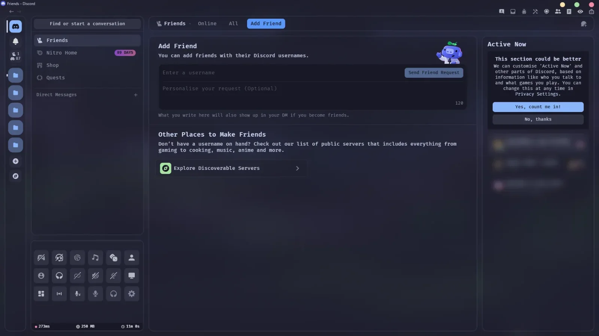
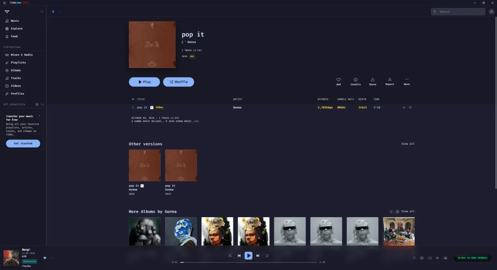
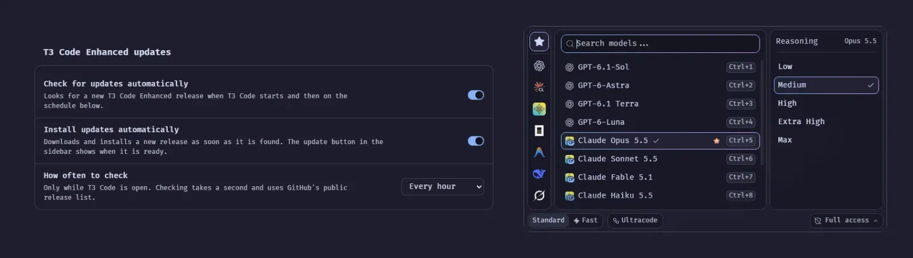
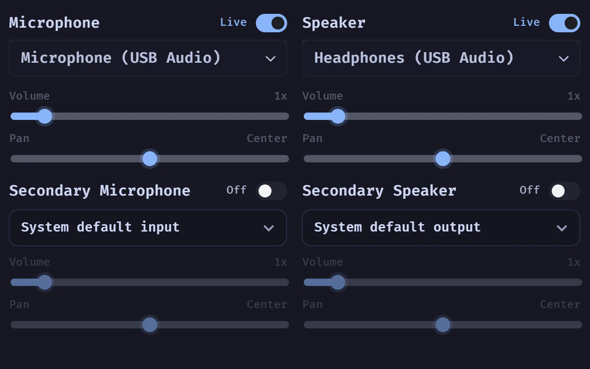
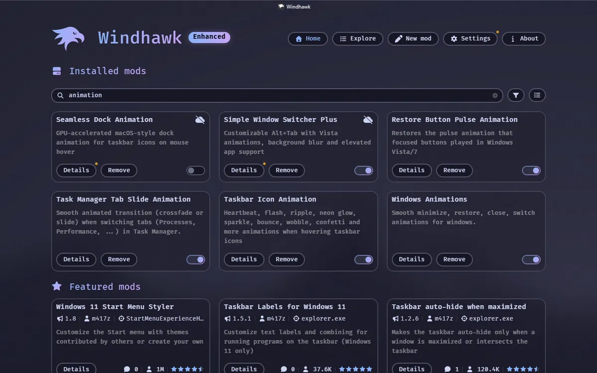
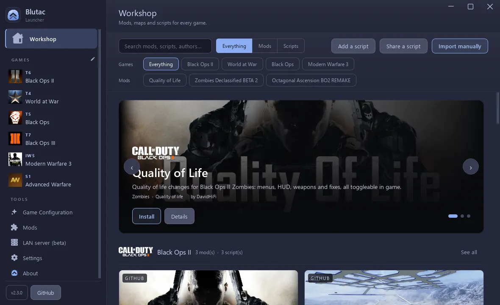
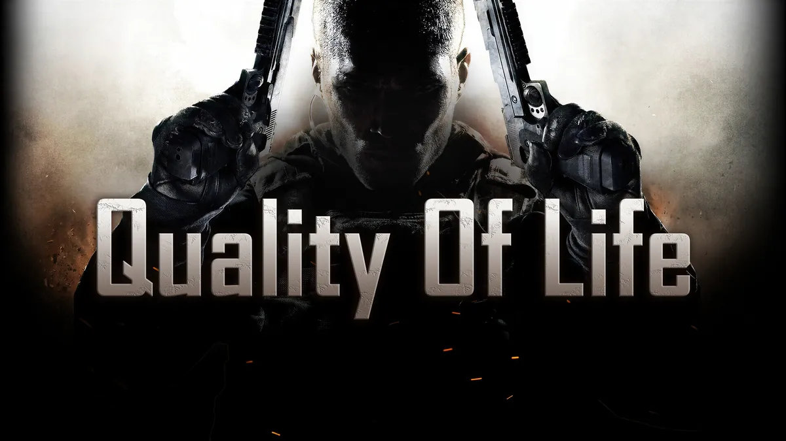

MochaCord
DiscordFrosted glass panels, rounded corners and soft blue buttons across all of Discord.
Needs TestCord, Vencord or Equicord
Free themes for Discord, Steam, TIDAL and T3 Code, all in the same Catppuccin Mocha colours: soft dark backgrounds, frosted glass and gentle blue and purple highlights.

The themes
Each theme is free and open on GitHub. Pick the apps you use and switch between them without the colours changing.
Frosted glass panels, rounded corners and soft blue buttons across all of Discord.
Needs TestCord, Vencord or Equicord

Rounded buttons, frosted menus and real Windows 11 blur behind your library. Built on SpaceTheme by SpaceEnergy.
Needs Millennium

Mocha colours, a frosted player bar and a purple progress bar for the TIDAL desktop app.
Needs TidaLuna and its Themer plugin

Restyles T3 Code, a desktop app for coding with AI, and adds small fixes. It updates itself and puts the theme back after every T3 Code update.
Needs Windows
All four use Catppuccin Mocha, a popular dark palette. Same background, same text, same blue.
Install
Every app loads themes its own way. Here are the short versions. Each GitHub page has the full guide.
https://raw.githubusercontent.com/DavidHiFi/MochaCord-Theme/main/MochaCord.css
Added this way, it updates on its own.
More of my work
Things I made because I wanted them to exist. All free.

A Discord app for Windows built for voice: stereo sound, extra mics and speakers, voice effects and better screen sharing controls.
See HaloCord
Taskbar, window and Start menu tweaks for Windows 11, plus my whole setup so you can copy it onto another PC.
See the mods
Install, update and launch Call of Duty mods on Plutonium from one window, with LAN play built in.
See the launcher
A big update for Black Ops II Zombies: almost every weapon in the Mystery Box, four unreleased wonder weapons and a settings menu in the game.
See the modAlso on GitHub: Discord plugins for voice and streaming, and a one-step Windhawk updater.
Questions
Everything here is free. If it made your desktop nicer, a coffee keeps the updates coming.